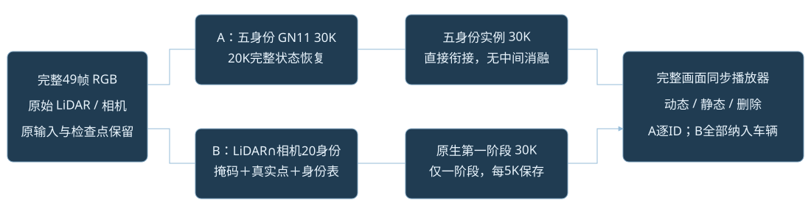
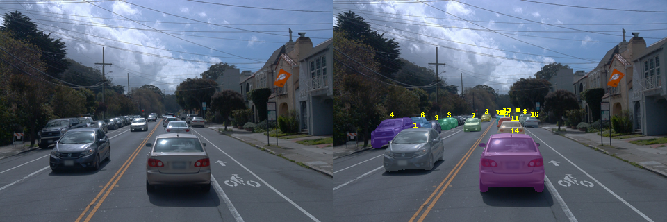

两条实验按完整画面验收
状态快照：2026-10-18T23:02:53+08:00（新加坡时间）。正式训练结果完成后再填入最终播放器。

| 实验 | 训练安排 | 当前状态 |
|---|
| A：同一批五身份 | GN11 30K → 新实例30K
取消两阶段之间的消融 | GN11 22100/30000
WAITING_FOR_ACTIVE_GN11_DIRECT_INSTANCE_NEXT |
| B：所有可见车辆，包含停驶车辆 | 补齐掩码、真实初始化与身份表 → 第一阶段30K
本轮不跑第二阶段 | COVERAGE_INVENTORY_COMPLETE_PREPARING_FULL_IDENTITY_AND_INITIALIZATION |
显存准入通过才并行；根据实际峰值和点数评估，必要时排队。所有历史检查点保留。
全车辆覆盖正在补齐
49帧标注共包含45条车辆轨迹，其中32条按中位速度低于0.5 m/s计为停驶；20条在本相机中有投影LiDAR证据。这些数字不等于完整可见车辆清单。此前缓存只对部分车辆完成了身份关联，已使用原始1920×1280图像完成全车辆49帧原生推理，峰值显存约11.27 GiB；目前正在补齐远处车辆的覆盖、身份关联与真实初始化。

图为旧缓存覆盖诊断，并非新30K结果。稀疏LiDAR命中率不能替代像素级与视觉检查；有遗漏的车辆不能直接标为背景。
验收标准
检查车辆是否残留在静态层、逐身份删除是否干净、全部删除后道路是否连续。跨帧看见过的道路可由观测约束；始终被遮挡的部分没有真实背景监督，本次基础30K不会自动增加生成补全。没有配对干净背景真值时，明确标注缺口。
第二阶段已接回原孤立动态α100，并保留逐身份可见贡献监督；相机无放回采样、SH间隔及空间增密／剪枝调用已经登记。CPU空间参考9项及采样恢复检查通过；实际GPU和最终资产质量仍待训练与评估。刚体表示没有PVG时间分裂，保留第一阶段SGCM结果。原生增密后重置屏幕半径的顺序也被保留，不能声称它提供持续的大投影点保证。
实验登记 · CPU检查 · 中间消融取消凭据